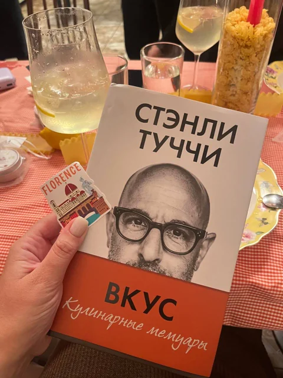
Книги
Несколько историй становятся проводниками в страну.
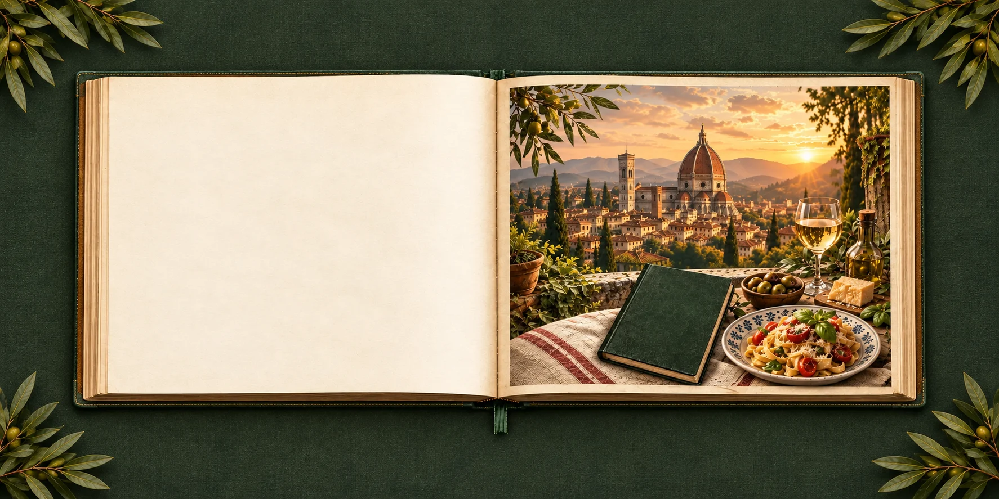
Книги · Еда · Атмосфера · Разговоры
Путешествуем по странам,
не покупая билет на самолёт.
Это не совсем книжный клуб.
И не просто ужин.

Несколько историй становятся проводниками в страну.
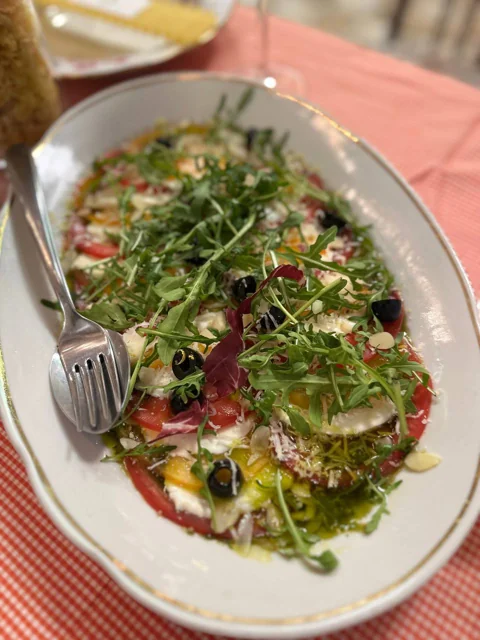
Пробуем страну на вкус — за одним столом.
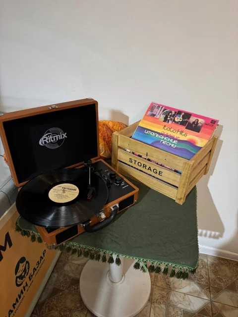
Музыка, детали и настроение другой культуры.
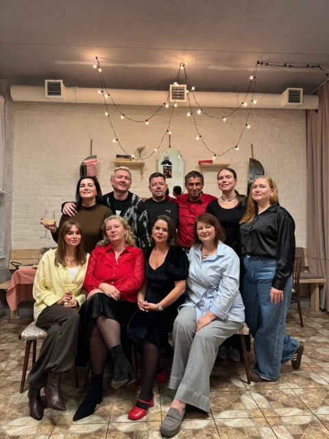
Знакомимся и разговариваем. Можно прийти одному или с друзьями.
Это вечер, на который можно прийти за книгой, едой, путешествием или просто хорошей компанией.
Книги, вкусы и разговоры — вот что вас ждёт
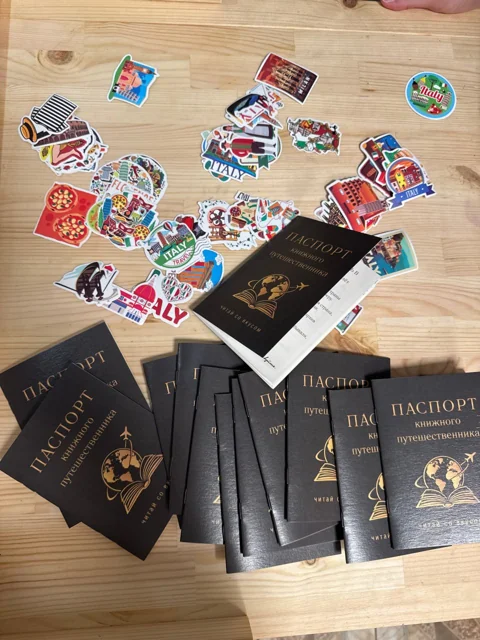
Каждый вечер посвящён одной стране — её историям, вкусам и настроению. Например, Италия начинается уже с деталей на столе.
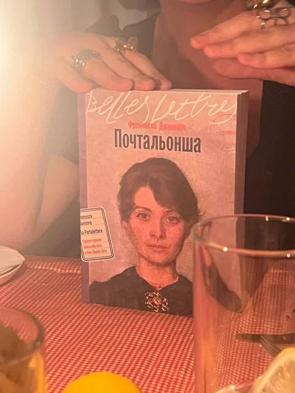
Несколько историй помогают почувствовать страну. Читать их все заранее необязательно — можно слушать и включаться в разговор.
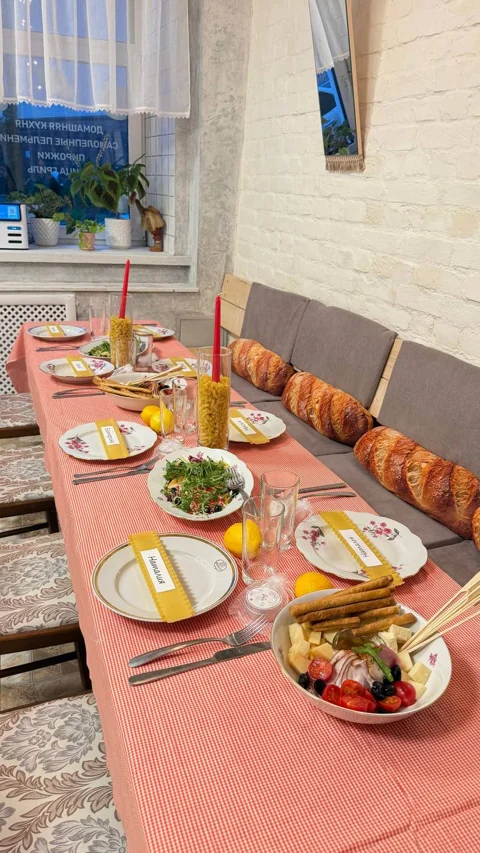
Знакомимся. Можно прийти одному или с друзьями: за общим столом есть место и для нового знакомства.
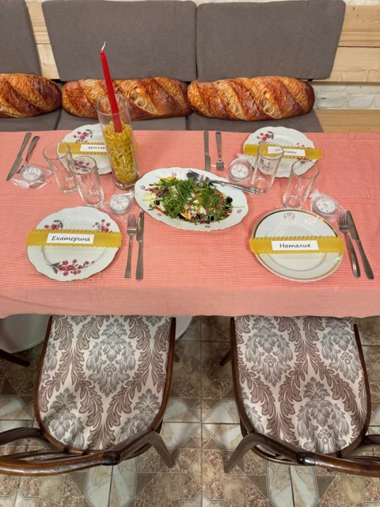
Пробуем страну на вкус и обсуждаем книги — это разговор, а не экзамен. Имена на пасте, музыка, свечи — даже маленькие детали становятся частью вечера.
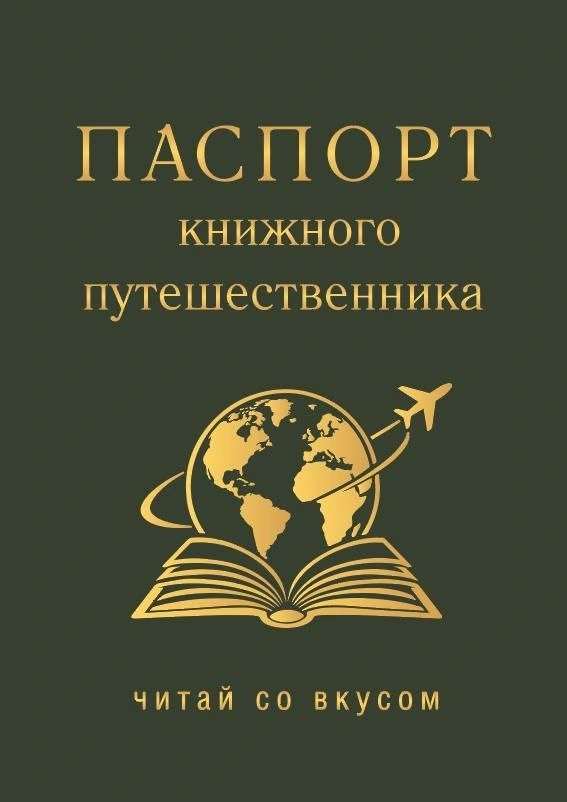
На встрече вы получаете бумажный паспорт книжного путешественника. После вечера в нём остаётся печать страны — память о книгах, вкусах и людях. С каждой встречей в нём становится на одну страну больше.
Читать все книги необязательно. Домашнего задания тоже нет.
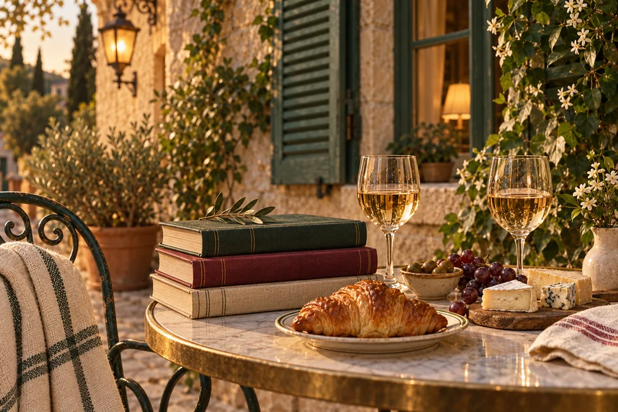
· Санкт‑Петербург
На один вечер отправляемся во Францию — через книги, вкусы и истории.
Можно прийти одному. Читать все книги необязательно.
Один вечер — целая страна. Отправляйтесь самостоятельно или вдвоём.
4 990 Р
Для тех, кто отправляется в путешествие самостоятельно.
В стоимость входит весь вечер «Читаем со вкусом»: книжное путешествие, тематическое меню и напитки, обсуждение книг, программа вечера и новая печать в паспорте книжного путешественника.
8 980 Р
Приходите с другом, подругой, партнёром — или с тем, с кем давно собирались куда‑нибудь выбраться.
Всё то же, что в тарифе 1, только сразу для двоих.
Два участника · два паспорта · две французские печати · один вечер, который потом можно вспоминать вместе.
Оплата откроется в новой вкладке Robokassa. Сайт останется открытым. Перед оплатой проверьте выбранный тариф и сумму.
Паспорт книжного путешественника
Это настоящий бумажный паспорт, только вместо пересечения границы — наши книжные вечера. На встрече в нём появляется печать страны. Собирайте страны одну за другой: книги заканчиваются, а истории и знакомства остаются.
Наше первое путешествие: итальянская кухня, книги и первый паспорт.
«Почтальонша» · «Ешь, молись, люби» · «Вкус»
Посмотреть, как это было →. Новая страна и новая история за общим столом.
. Подробности путешествия сообщим позже.
Так выглядит «Читаем со вкусом»: книга, бокал, еда, паспорт, печать и общий стол. Самое важное — люди и живые разговоры.
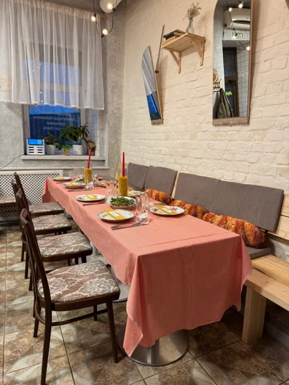
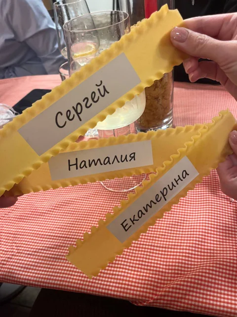
Участники итальянского вечера — о своих впечатлениях.
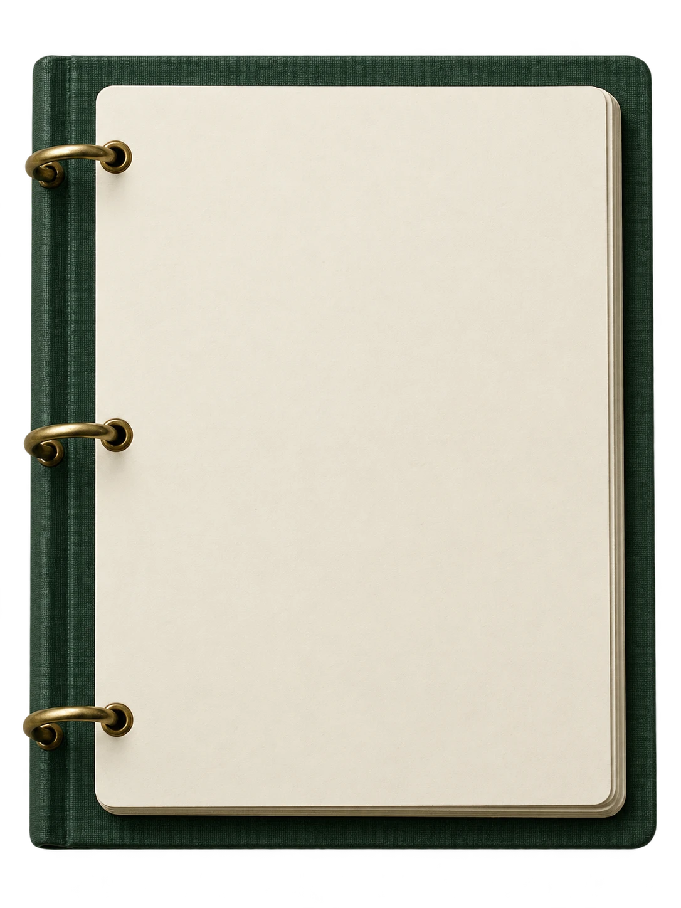
Можно прийти без знакомых. На встрече мы знакомимся и разговариваем за общим столом — книги и впечатления о стране дают повод начать разговор.
Ничего страшного. Читать все книги необязательно, и домашнего задания нет. Можно слушать и просто прийти поговорить.
Найдём вам компанию. Мы знакомимся и разговариваем за общим столом. Можно прийти одному или с друзьями.
Если вы любите хотя бы что‑то из этого — книги, путешествия, вкусную еду, красивые места и интересные разговоры — скорее всего, да. «Читаем со вкусом» не требует специальной подготовки. Достаточно любопытства и желания необычно провести вечер.
Мы тоже не совсем классический книжный клуб. Это вечер про страну: книги, еду, музыку, детали и живые разговоры.
Это тоже уважительная причина. На вечер можно прийти за книгой, едой, путешествием или хорошей компанией.
Кажется, вы по адресу. Путешествуем по странам, не покупая билет на самолёт.
Хотите узнать о следующем путешествии первыми?
Предзапись ни к чему вас не обязывает. Просто не придётся случайно узнать о новой встрече через три дня после неё.
Книжный клуб по подписке — следующая глава проекта. Одна книга в месяц: можно читать, можно слушать, можно просто прийти поговорить. Подробности — после запуска.
Выберите направление для будущего путешествия.
Выбор пока не отправляется организатору.
Форму предзаписи на будущие встречи подключим после согласования; здесь контакты пока не собираются. Билеты на ближайшую Францию уже доступны выше на странице.